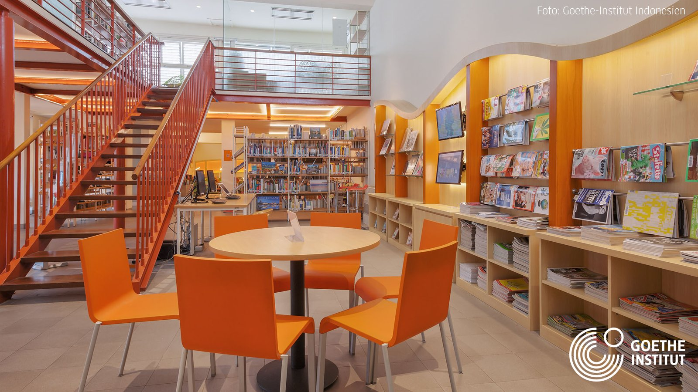
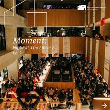
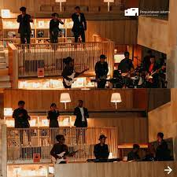

Perpustakaan Zaman Now
Oleh kelompok 1
Kania Salsabilla - Kevin Adam - Siti Nur Oktavia - Sabrina Ayu Cahyani

Perpustakaan modern dengan desain unik dan instagrameable
menjadi tren populer.
Desain inovatif dan estetis menarik perhatian terutama generasi yang aktif di media sosial. Perpustakaan semacam ini menonjolkan arsitektur modern dengan bentuk futuristik dan fasad kaca yang mengesankan.
Pencahayaan kreatif, lampu gantung artistik, dan cahaya alami melalui jendela besar menciptakan suasana istimewa. Rak buku dan furnitur berdesain kreatif, bersama dengan penggunaan warna berani dan pola mencolok pada dinding dan lantai, ikut memberikan kontribusi pada estetika yang mengesankan. Beberapa perpustakaan bahkan menawarkan ruangan tematik sesuai dengan koleksi atau topik tertentu, seperti galeri seni. Pameran seni, instalasi seni, dan area selfie khusus menambahkan unsur seni dan memungkinkan pengunjung berbagi pengalaman visual di media sosial. Dengan semua elemen ini, perpustakaan bukan hanya tempat belajar, tetapi juga destinasi wisata menarik dan ruang berbagi pengalaman estetis di era digital.
Seiring perkembangan waktu, perpustakaan di berbagai tempat, termasuk Taman Ismail Marzuki (TIM), dapat menyelenggarakan berbagai acara, konser, dan festival untuk memperkaya pengalaman pengunjung dan mendukung keberagaman kegiatan budaya.
 
FESTIVAL SENI
Menyelenggarakan festival seni yang melibatkan pameran seni visual, pertunjukan teater, dan aktivitas seni lainnya.
KONSER MUSIK
Menyelenggarakan konser musik dengan berbagai genre, melibatkan musisi lokal maupun internasional.
PERTUNJUKAN SENI RUPA DAN PAMERAN FOTOGRAFI
Menampilkan pertunjukan seni rupa, termasuk pameran lukisan, instalasi seni, atau karya seni visual lainnya. Menyelenggarakan pameran fotografi untuk memajukan seni fotografi dan memamerkan karya-karya fotografer.
Untuk selengkapnya, klik disini!